不自动合并取件点
同一个驿站在不同短信里写法不同。App 只提示一句「可能是同一个点？」， 合并前给你看两边各几件、各自的原始写法，合并后 5 秒内可撤销。
翻三个 App、在短信里找那串码、到了柜子不知道是几号格、丰巢还剩多久开始收钱。 这个 App 只干一件事：把这几步压成一眼。
两边同一个签名包 · sha256sum -c SHA256SUMS.txt
证书指纹 e18262c9…674d3
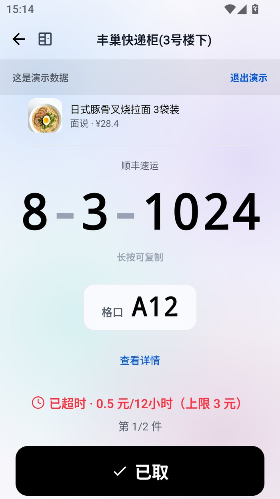
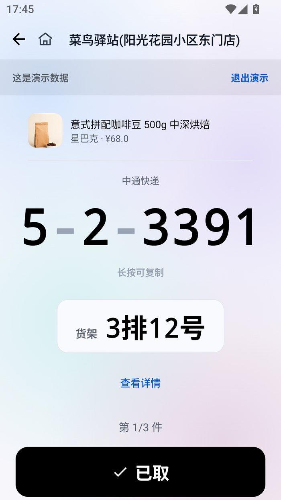
全屏现场模式。字号按 min(基准, 140 / 字符数 × 屏宽) 算——
12 位的码和 4 位的码都不会撑破屏幕，也不会小到看不清。
短信里没有格口号时，那一整块消失、码变大，而不是留一个 --。
顶栏、分组、位置行、「已取」和复制提示一起消失，只留码、格口和倒计时。 举着手机对格口时，最容易被误触的那颗键不在那儿；身后排队的人也看不到点名和件数。
柜机给的是格口，驿站给的是货架。两者的时效判据也不同： 丰巢按免费保管剩余时间（默认 18 小时，超时 0.5 元/12 小时、封顶 3 元），驿站按关门时间。 所以现场模式不是一张万能模板。
18 小时内免费。超时 0.5 元/12 小时，封顶 3 元。倒计时一直在跳，紧迫度不靠加第四种颜色。
没有免费时限，按关门时间算。同一个点有几件会一起轮播，第 1/3 件，不用退出重进。
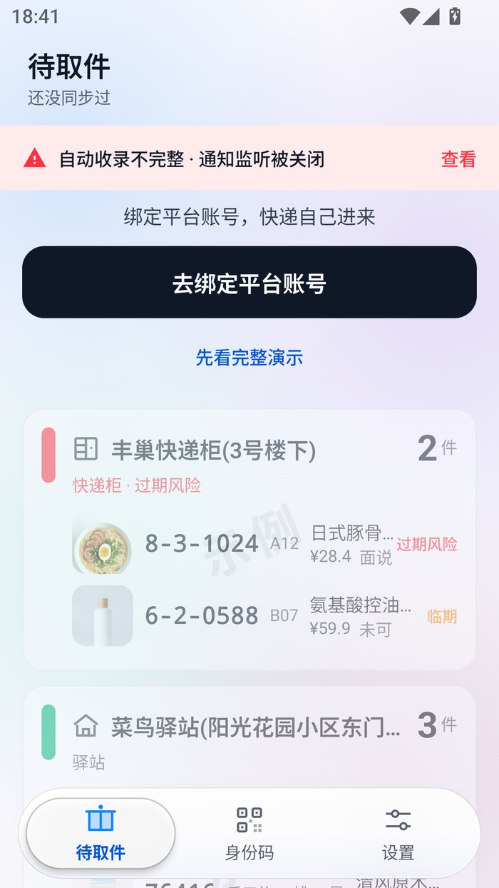
不靠加第四种颜色表达紧迫度，靠倒计时数字一直在跳。 卡片底色也跟着走：临期是暖底，未识别是要你看一眼的暖底。
同一条短信里两个件、两个点，颜色不同是因为它们真的不一样。
这些不是设计稿，是 release 包在真机上跑出来的。
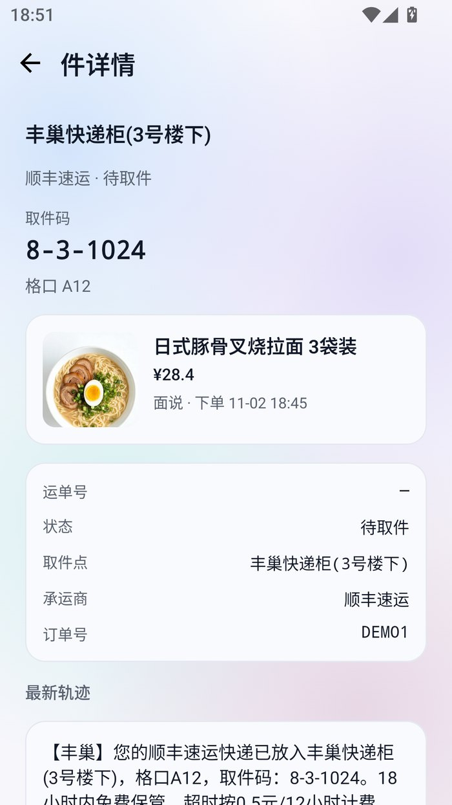
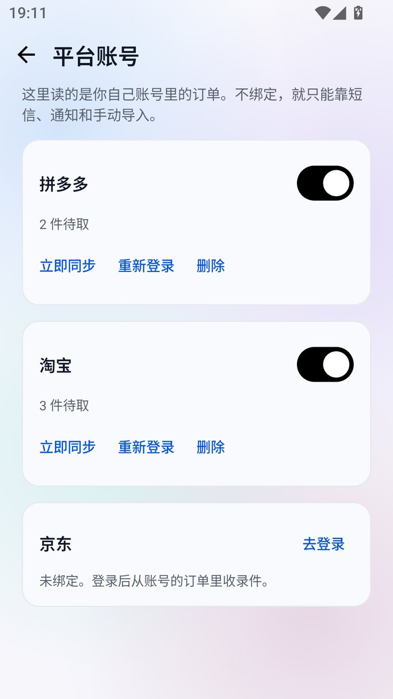
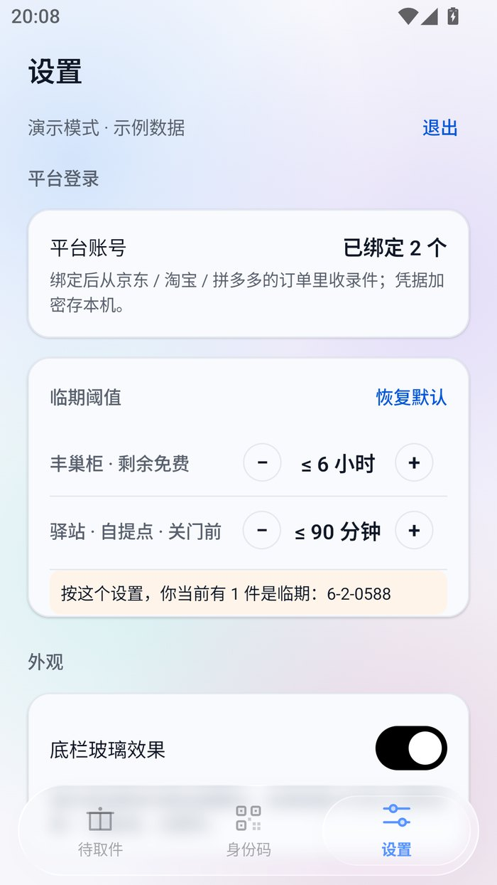
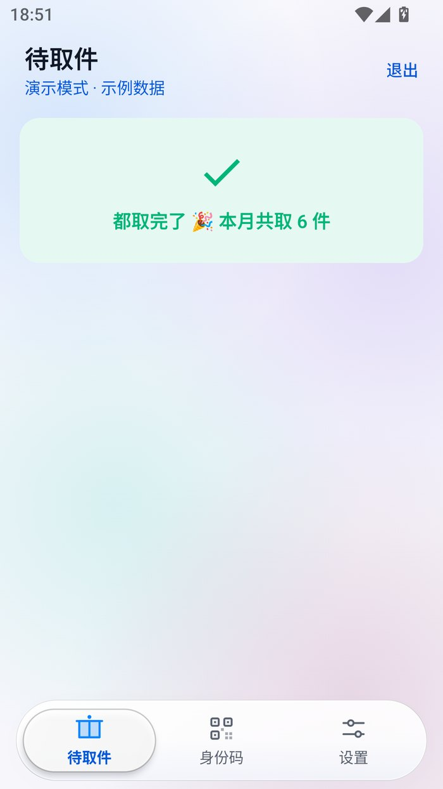
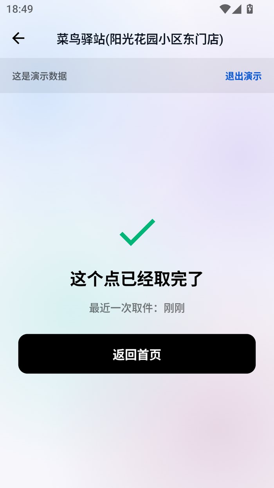
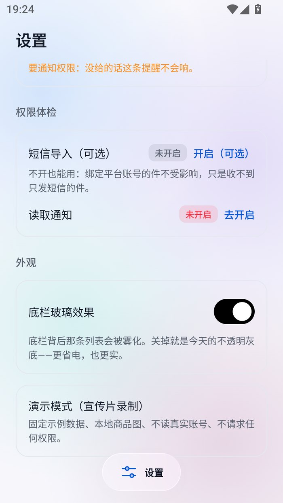
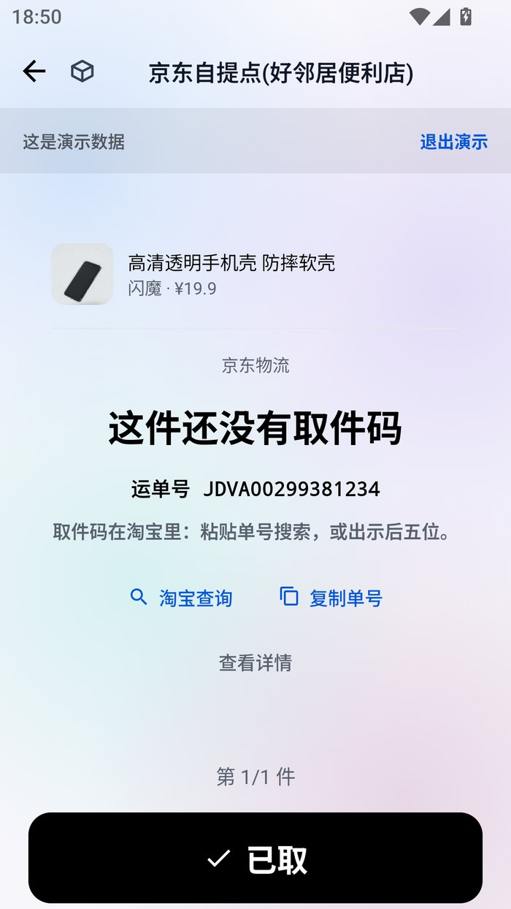
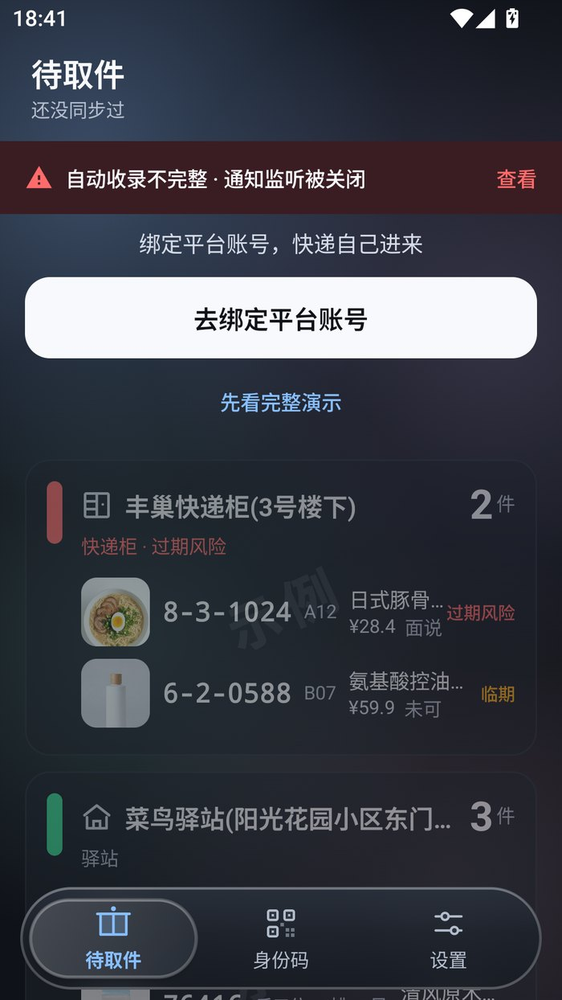
同一个驿站在不同短信里写法不同。App 只提示一句「可能是同一个点？」， 合并前给你看两边各几件、各自的原始写法，合并后 5 秒内可撤销。
认不出码属于哪个点时，宁可放进「没认出来」等你确认，也不猜一个名字生成一张卡片。
有些件不发短信、也不推通知。任何声称「不登录、不读屏、还能自动补上所有平台的漏件」的方案都在骗你。
第三方锁屏小组件 Android 5.0 就被移除了。取快递时你本来就会解锁手机。
setDefaultUncaughtExceptionHandler。
allowBackup="false"。Cookie 密文与取件码不会被 adb backup 或云备份带走。
上面每一条都能在源码里核对。发现对不上的地方，请开 issue——这比任何隐私政策都算数。
sha256sum -c SHA256SUMS.txt这份清单和 APK 出自同一个仓库，挡的是传输损坏和镜像篡改，挡不了冒充发布者。
apksigner verify --print-certs showcode-0.4.5.apk
# Signer #1 certificate SHA-256 digest
# e18262c9d03e18f111a87774d0887953
# adc686b2650c4f5035372686ecc674d3Android 的签名密钥无法轮换。对得上＝同一个维护者；对不上就不是新版本，是另一个人发的包，别装。
不注册、无广告、无统计 SDK。绑定平台账号是主路径，短信导入是补充手段——不开也能用。